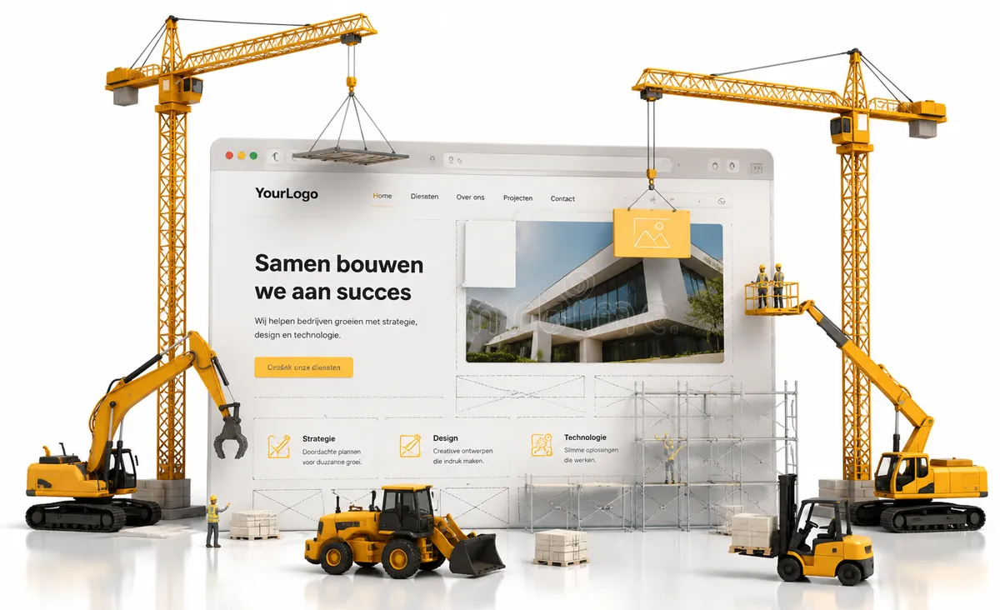

Website voor een eenmanszaak
in de bouw
Je bent vakman, geen marketeer. Toch checken klanten je tegenwoordig eerst online voordat ze bellen. In dit artikel lees je precies wat er op de website van je bouwbedrijf moet staan om vertrouwen te wekken en opdrachten binnen te halen.

Of je nu aannemer, timmerman, stukadoor, klusjesman of allround bouwbedrijf bent: een groot deel van je nieuwe klanten begint online. Iemand krijgt je naam door via een buurman, typt die in Google en kijkt wat er verschijnt. Vind je dan niets, of alleen een verouderde Facebookpagina, dan haakt de helft af. Een goede website voor je eenmanszaak in de bouw is je digitale visitekaartje en je beste verkoper, ook als je zelf op de steiger staat.
Waarom een eenmanszaak in de bouw een website nodig heeft
Veel zzp'ers in de bouw denken dat ze genoeg werk hebben via mond-tot-mond. Dat klopt vaak, maar mond-tot-mond en een website versterken elkaar. Wie je naam hoort, zoekt je op. Een nette website bevestigt dan dat je een serieuze vakman bent. Geen website betekent twijfel, en twijfel betekent dat ze de volgende in het rijtje bellen.
Daarnaast vang je met een website ook de mensen die je nog niet kennen. Iemand die zoekt op "aannemer in de buurt" of "badkamer laten verbouwen" komt bij jou uit als je site daarop is ingericht. Dat is werk dat je anders volledig misloopt.
Wat moet er op je bouwwebsite staan? De checklist
Een bouwwebsite hoeft niet groot of ingewikkeld te zijn. Sterker nog, simpel en duidelijk werkt het best. Dit zijn de onderdelen die echt het verschil maken voor het binnenhalen van opdrachten:
- Een duidelijke kop met wat je doet en waar. Geen vage slogan, maar meteen helder: "Allround aannemer in Purmerend en omstreken". De bezoeker weet binnen twee seconden of hij goed zit.
- Je diensten op een rij. Verbouwingen, badkamers, kozijnen, dakkapellen, onderhoud. Maak per belangrijke dienst liefst een eigen pagina, dat helpt ook voor Google.
- Foto's van afgerond werk. Dit is voor de bouw het allerbelangrijkste. Een potentiele klant wil zien wat je in je mars hebt. Voor- en na-foto's van projecten doen meer dan duizend woorden.
- Reviews en ervaringen van klanten. Een paar oprechte quotes van tevreden opdrachtgevers wekken direct vertrouwen. Mensen geloven andere klanten eerder dan jezelf.
- Je werkgebied. Benoem de plaatsen waar je werkt. Zo weet de bezoeker dat je in de buurt zit en scoor je beter op lokale zoekopdrachten.
- Een makkelijke manier om contact op te nemen. Een knop "Vraag een offerte aan", je telefoonnummer groot in beeld en een kort contactformulier. Maak het de klant zo makkelijk mogelijk.
Foto's van projecten: jouw sterkste verkoopargument
In de bouw verkoop je met je handen, en op je website verkoop je met beeld. Een pagina met echte projectfoto's overtuigt sneller dan welke tekst dan ook. Maak foto's bij daglicht, houd ze scherp en laat het eindresultaat zien waar je trots op bent. Een korte regel erbij over wat de klus inhield maakt het compleet. Heb je geen goede foto's? Dan helpt professionele fotografie je site meteen een niveau hoger.
Zo word je gevonden door klanten in jouw regio
Een mooie website is niets waard als niemand hem vindt. Voor een bouwbedrijf draait vindbaarheid bijna altijd om de regio. Mensen zoeken niet zomaar naar "aannemer", maar naar "aannemer Purmerend" of "klusbedrijf Noord-Holland". Daar speel je op in met lokale SEO:
- Gebruik de namen van plaatsen waar je werkt in je teksten en paginatitels.
- Maak eventueel een pagina per dienst en per plaats, zoals "badkamer verbouwen in Purmerend".
- Zet een gratis Google Bedrijfsprofiel op, zodat je op de kaart en in de zoekresultaten verschijnt.
- Verzamel reviews op Google, want die wegen zwaar mee voor je positie.
Werk je in een vaste regio? Kijk dan ook eens naar onze pagina's over een website laten maken in Purmerend, Castricum en Limmen.
Veelgemaakte fouten op bouwwebsites
Een paar dingen zorgen ervoor dat een bouwwebsite juist klanten kost in plaats van oplevert. Vermijd deze valkuilen:
- Geen actuele projectfoto's. Stockfoto's van andermans werk prikken mensen zo doorheen.
- Een verstopt telefoonnummer. In de bouw wil de klant bellen. Zet je nummer bovenaan en onderaan elke pagina.
- Een trage of niet-mobiele site. De meeste bezoekers kijken op hun telefoon, vaak vanaf de bouwplaats of de bank 's avonds.
- Geen werkgebied benoemd. Dan weet de klant niet of je wel naar hem toe komt.
Wat kost zo'n website en hoe begin je?
Een professionele website voor een eenmanszaak in de bouw hoeft geen vermogen te kosten. Bij Brand-On start het Starter pakket op 750 euro voor vijf pagina's, ideaal voor een zzp'er die professioneel voor de dag wil komen. Wil je meer projecten laten zien, sterkere vindbaarheid en fotografie, dan past het Professioneel pakket van 1500 euro beter. Op onze tarievenpagina reken je het zelf uit.
Brand-On is een webdesign studio uit Purmerend, actief in heel Noord-Holland. We zijn bewust klein, dus je werkt direct met de mensen die je site bouwen. We spreken jouw taal en bouwen een website die past bij hoe jij werkt: nuchter, duidelijk en gericht op opdrachten.
Website voor een eenmanszaak in de bouw
Heeft een eenmanszaak in de bouw echt een website nodig?
Ja. Ook al komt veel werk via mond-tot-mond, mensen checken je vrijwel altijd online voordat ze bellen. Zonder website verlies je de potentiele klant die je naam intypt in Google en niets vindt, of alleen een verouderde Facebookpagina. Een nette website wekt vertrouwen en zorgt dat je gevonden wordt door mensen die nu een klus hebben.
Wat moet er minimaal op de website van een bouwbedrijf staan?
De basis is: een duidelijke omschrijving van je diensten, foto's van afgeronde projecten, reviews van klanten, je werkgebied, een offerte- of contactknop en je contactgegevens met telefoonnummer. Dat is genoeg om vertrouwen te wekken en opdrachten binnen te halen.
Hoe word ik met mijn bouwbedrijf gevonden in Google?
Door per dienst en per regio een pagina te maken met de woorden die mensen intypen, zoals "aannemer Purmerend" of "badkamer verbouwen Noord-Holland". Combineer dat met een Google Bedrijfsprofiel en echte klantreviews. Zo verschijn je bij mensen die in jouw buurt op zoek zijn naar een vakman.
Wat kost een website voor een eenmanszaak in de bouw?
Een professionele website voor een zzp'er in de bouw begint bij Brand-On op 750 euro voor het Starter pakket met vijf pagina's. Wil je meer projecten tonen, sterkere SEO en fotografie, dan is het Professioneel pakket van 1500 euro een goede keuze.
Gerelateerde artikelen
Laten we jouw merk
aanzetten.
Benieuwd hoe jouw bouwwebsite eruit kan zien? Vraag een gratis concept aan, helemaal vrijblijvend. Je ziet dan met eigen ogen wat een sterke site voor je bedrijf kan betekenen, met een persoonlijk antwoord binnen één werkdag.